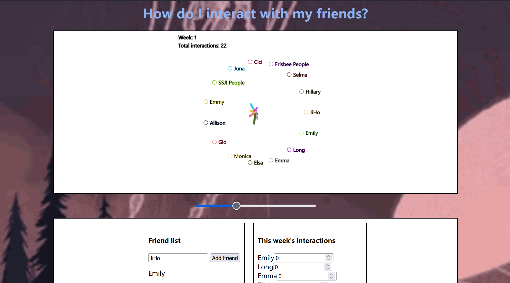

2022/06/12 13:47
hdiiwmf ~ socializing in college
My first semester in college was nothing like anything before.
I'm sure that is not uncommon.
College for me was the first time I had to make an entirely new set of friends, away from my family connections, and by my choice without social media.
Part of me enjoyed this clean slate, the other part feared I didn't know how to reconstruct myself.
I started college with the strategy of casting my net as wide as possible. I sat with new people every meal and class and met a lot of different people. However, where I gained breadth, I lacked depth. By week four, everyone had settled tightly into groups whereas I only had samples of random people.
I tried going to more social events, but the events increasingly became a place to go with friends, not a place to go make friends.
By October, I felt pretty lonely and lost. I felt like I needed to accept I was a loner and blame it all on introversion. But instead of getting too much in my head, I decided to what some may call 'game-ify' my problem.
Using the p5.js library, I made a little webpage I could use to graph my weekly social interactions per person. It not only proved to myself I did in fact meet people regularly, but also incentivized me to leave my room. I called this 'How Do I Interact With My Friends' or 'hdiiwmf'. This simple program was a life changer. I actually only used it for five weeks before not needing it anymore.
Personally tracking my social life made me feel less alone. Even stranger, this very project helped me connect with someone who also used a social tracking system that made them feel less alone. I was reading an MIT blog and stumbled upon a similar story. Sometimes, you socialize by talking about figuring out how to socialize.
"